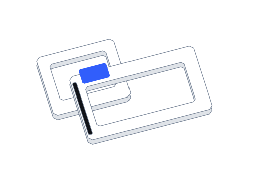

Actual CSS pixels, without a magnified frame. Use these studies at 32px or larger.
Cut32px48px96px
Fold32px48px96px
Proposed lockupLive Geist typography
Startup Atlas
The mark and text remain separate. This is a scale and spacing study, not a replacement app header.
02 / Research artwork
Objects with a specific job.
Broad silhouettes, open space and one active part. Four illustrations extend Folio, Index and Relay into headers and editorial panels.
01 / FolioSource evidence

Light / transparent SVG
Folio / Source
A broad dossier opens around a smaller supporting sheet. One deliberate attachment makes the source relationship readable without inventing the record itself.
Use
Source explanations, provenance introductions and research methodology.
Meaning
Evidence can be traced. The artwork is not a verification badge.
Graphite carries structure. Porcelain gives it space. Cobalt identifies one deliberate part; it does not turn decorative art into a selected UI control.
02
Give depth a role.
Use a fine boundary and restrained surface elevation around the illustration. Keep record rows calm and retain the asset’s clear exterior and open cutouts.
03
Respect the scale.
Marks start at 32px; research illustrations start at 160px. Use the matching palette for the host surface and preserve the full silhouette. Dark specimens are review variants.
04
Keep the facts explicit.
Pair meaningful art with a useful text alternative. Decorative repetitions use empty alt text. Company names, figures, relationships and status belong to reviewed records.
Source and provenance
Editable, inspectable, separate.
Six authored constructions, each in light, dark and monochrome. The manifest identifies the assets, their source geometry and intended roles. The original r1 studies remain available for comparison.